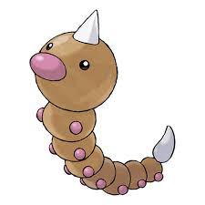

Weedle es un Pokémon de tipo bicho/veneno introducido en la primera generación. Es conocido como el Pokémon Oruga. Weedle es una oruga amarilla con una cabeza grande y redonda. Tiene una nariz puntiaguda de color marrón y dos antenas largas y delgadas que sobresalen de la parte superior de su cabeza.
 Volver a la página principal